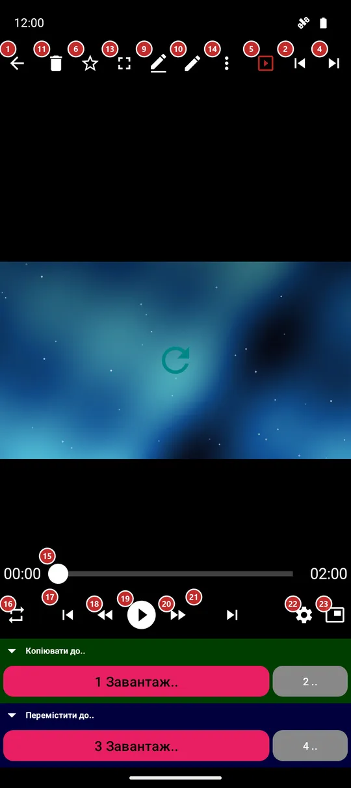
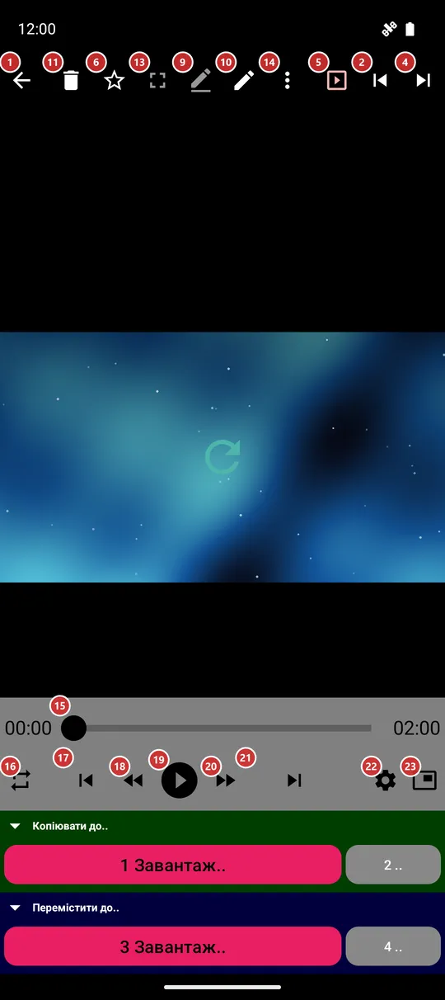

Плеєр
Для чого цей екран
Плеєр відкриває файл із браузера файлів: відтворює відео чи музику, показує фото, читає документ, книгу або текст. На цьому ж екрані є кнопки, щоб перейти до іншого файлу, розкласти поточний по теках і поділитися ним.


Порядок дій
- Відкрийте файл у браузері файлів. Відео починається на весь екран: торкніться картинки, щоб повернути кнопки, а кнопкою «На весь екран» 13 перемикайтеся між самою картинкою та картинкою з панеллю команд.
- «Відтворити / пауза» 19 запускає й зупиняє відтворення; «Перемотати назад» 18 і «Перемотати вперед» 20 стрибають на 10 секунд, а шкала 15 переносить у будь-який момент.
- «Попередній файл» 17 і «Наступний файл» 21 ідуть по папці в порядку браузера файлів; свайп ліворуч чи праворуч по картинці робить те саме. «Випадковий перехід» 3 стрибає на будь-який файл.
- «Порядок відтворення» 16 обирає, що буде, коли файл закінчиться: повтор одного, цикл по списку, відтворення до кінця або перемішування.
- «Налаштування відтворення» 22 - швидкість, гучність, звукова доріжка, субтитри й кольори.
- «Перейменувати» 9, «Редагувати» 10, «Видалити» 11 і «Поділитися» 7 працюють із поточним файлом, «Скасувати» 12 повертає видалення чи переміщення, а «Обране» 6 додає файл до обраного.
- «Ще» 14 відкриває меню з усім іншим для цього виду файлу: зберегти кадр, повернути, вивести на екран або перекласти. «Картинка в картинці» 23 згортає відео в маленьке вікно, а пункт «Довідка» в меню або клавіша F1 відкриває цю сторінку.
Елементи
Панель команд
1НазадЗакриває плеєр і повертає до списку файлів.
Кнопка «Назад» пристрою робить те саме. Торкання в лівому верхньому куті картинки теж.
2ПопереднійПереходить до попереднього файлу папки.
Порядок такий самий, як у браузері файлів. Видалений чи переміщений файл уже зник зі списку, тож на нього ви не потрапите.
3Випадковий перехідСтрибає на випадковий файл папки.
Зручно для перемішаного прослуховування або щоб глянути на те, про що ви забули.
4НаступнийПереходить до наступного файлу папки.
Порядок такий самий, як у браузері файлів. Свайп ліворуч по фото чи відео робить те саме.
5СлайдшоуЗапускає й зупиняє показ.
У режимі показу плеєр сам переходить до наступного файлу. Темп і оформлення налаштовуються в налаштуваннях, на вкладці «Медіа».
6ОбранеДодає файл до обраного або прибирає його звідти.
Усе позначене збирається в «Обраному» у списку ресурсів.
8Інформація про файлПоказує, що застосунок знає про файл.
Розмір, повний шлях і, де це доречно, роздільна здатність або параметри зйомки.
9ПерейменуватиПерейменовує поточний файл.
Діалог запитає нову назву.
10РедагуватиВідкриває інструменти редагування поточного файлу.
Що відкриється, залежить від виду файлу: налаштування відтворення для відео й музики, вікно редагування для фото, GIF або PDF.
11ВидалитиВидаляє поточний файл після підтвердження.
Видалений файл одразу зникає зі списку.
- Скасування
- «Скасувати» повертає файл, поки застосунок ще пам’ятає операцію.
12СкасуватиПовертає останнє видалення або переміщення.
Кнопка з’являється одразу після такої операції.
13На весь екранХоває панель команд, щоб лишилася тільки картинка.
Щоб повернути панель, торкніться картинки або кнопки «Вийти з повноекранного режиму» в куті. Якщо повернути телефон набік, плеєр сам піде на весь екран, а якщо повернути вертикально, панель повернеться. Відео при цьому триває.
14ЩеВідкриває меню з рештою дій.
Кнопки, що не вмістилися, переїжджають сюди, тож нічого не зникає. Меню залежить від виду файлу: зберегти кадр відео, повернути чи обрізати фото, пошук, переклад і витягання тексту в документі чи книзі, текст пісні й таймер сну для музики, виведення на екран, друк і «Надіслати до..». Клавіша F1 відкриває цю сторінку; пункт «Довідка» в цьому меню - теж.
Вибір файлу: G відкриває Мініатюри, F4 - Список файлів, N - Перейти до файлу. Нумерація починається з 1. Ці самі дії є в меню з трьома крапками. Якщо колекції немає, вікно пояснює недоступність переходів.
Клавіші відео: крапка викликає Наступний кадр. Попередній кадр недоступний із поясненням, якщо декодер не підтримує крок назад. Shift+L задає A, потім B, потім вимикає повтор; B має бути після A. Межі показано до скасування, зміни файлу або зупинки вікна. Ці дії доступні й у меню.
Клавіші слайд-шоу: S запускає показ. Повторне S скорочує поточний інтервал удвічі, але не нижче 1 секунди; I запускає випадковий порядок або перемикає на нього. Це працює й в окремому плеєрі, якщо в папці кілька файлів. Одиночне вікно пояснює обмеження.
Відтворення
15Шкала часуПоказує, як далеко просунувся файл, і дає змогу перейти в будь-який момент.
Потягніть повзунок або торкніться шкали. З обох боків від неї стоять час відтворення й довжина файлу.
16Порядок відтворенняОбирає, що буде, коли файл закінчиться.
«Повторювати один» грає той самий файл знову й знову. «По колу» після останнього файлу повертається до першого. «До кінця» зупиняється після останнього файлу. «Перемішати» грає у випадковому порядку.
17Попередній файлПереходить до попереднього файлу папки.
Те саме, що «Попередній» на панелі команд, але ближче до великого пальця.
18Перемотати назад на 10 секундСтрибає на 10 секунд назад.
Натисніть кілька разів, щоб повернутися ще далі.
19Відтворити / паузаЗапускає й ставить на паузу відтворення.
Для анімованої картинки, наприклад GIF, запускає й зупиняє анімацію. Плеєр пам’ятає, як далеко ви додивилися, тож той самий файл продовжиться звідти наступного разу.
20Перемотати вперед на 10 секундСтрибає на 10 секунд уперед.
Натисніть кілька разів, щоб пропустити довгу заставку.
21Наступний файлПереходить до наступного файлу папки.
Те саме, що «Наступний» на панелі команд, але ближче до великого пальця.
22Налаштування відтворенняВідкриває вікно налаштувань відтворення.
Швидкість, зокрема дуже повільні 0,1x і 0,3x, гучність, яскравість, звукова доріжка, субтитри й кольори. У портретній орієнтації повзунки стоять вертикально, тож великий палець рухає їх знизу вгору.
23Картинка в картинціЗгортає відео в маленьке вікно поверх інших застосунків.
Кнопка є у відео, якщо пристрій це підтримує.